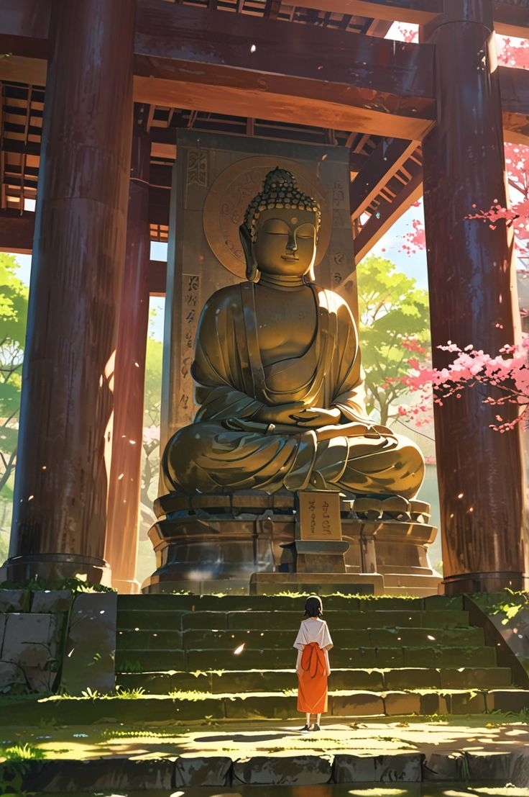
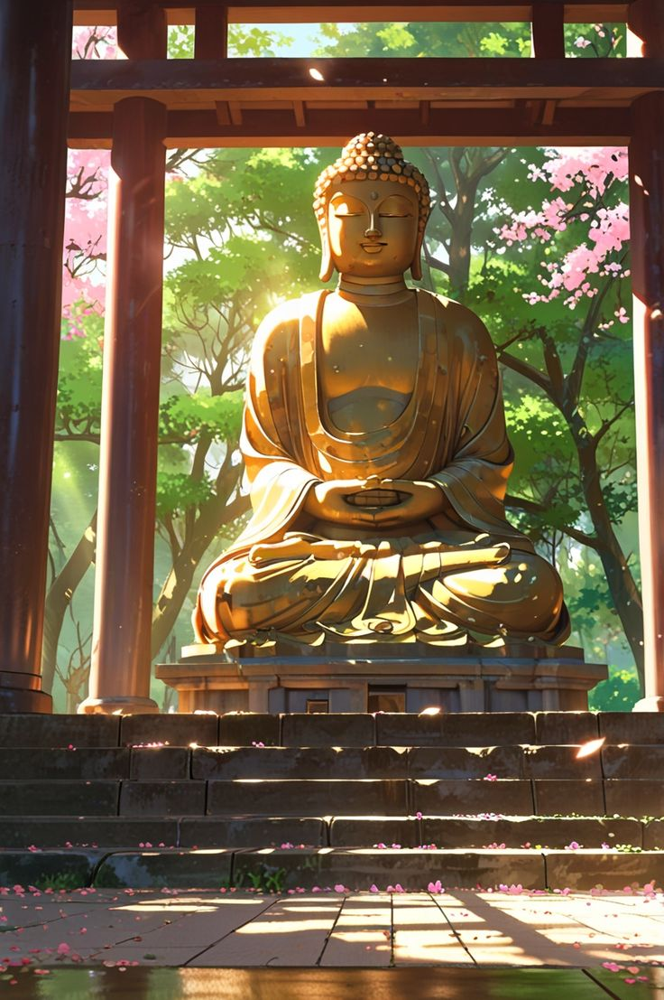

Sit down. Breathe. You are already here.
A temple high on the mountain, deep in the forest. Climb the mossy steps, sit with the Buddha in the morning light, and listen: wind in the cedars, a stream below, birds in the cherry trees.

Choose a doorway
Each sit opens and closes with a temple bell. Your sessions stay in this browser only.
Carry it through the day. Don't solve it; let it work on you.
Sit
Pick a practice and a length. The brush draws one ensō across the whole sit. When it closes, the bell rings three times.
Temple
The hall at the top of the steps. Sunlight through the cedars, petals on the stone. Light a stick of incense and sit until it burns down, ring the great bell, bow, and set an intention for the day.

One stick burns for ten minutes. Sit with it.
At New Year, temples in Japan ring the bell 108 times, once for each of the worldly passions.
Palms together at the chest. Bow to the Buddha, to the teaching, to everyone who practices.
Shake the box. One slip comes out.
Practices
Eight ways to sit, walk and open the heart, from the Zen hall and the wider Buddhist traditions. Read the steps, then begin; the timer will guide you with cues.
Learning Zen
Ten short lessons, in order, from beginner's mind to your original face. Each ends with a question to sit with. Mark a lesson when it has become yours.
Stories
The history of the teaching travels in stories: a prince under a fig tree, a flower held up in silence, a monk who would not explain. Read one slowly.
The cosmos you are made of
The deepest "secrets" turn out to be plain facts looked at slowly. Each one below is marked as science, measured and checkable, or as contemplation, a way of seeing that the traditions offer.
All 13.8 billion years, folded into one calendar year
If the Big Bang is the first instant of January 1st, the Sun does not ignite until the end of August. Life appears in late September. Every human who ever lived arrives in the last minutes of December 31st.
The Buddha sat under the Bodhi tree about six seconds before midnight. Your whole life so far is a fraction of a second.
This is not a reason to feel small. It is the reason each breath counts. The universe took the whole year to arrive at this one: yours.
Return to Source
Zen asks: what was your original face, before your parents were born? Every tradition points to the same ground, the awareness that is here before any thought of "me". This practice turns the light around to look for it.
A guided return, about six minutes. Find a seat, and press Begin.
Meditation and contemplation support wellbeing; they are not a substitute for care from a doctor or therapist. If practice stirs up something heavy, it is wise to talk with someone you trust.